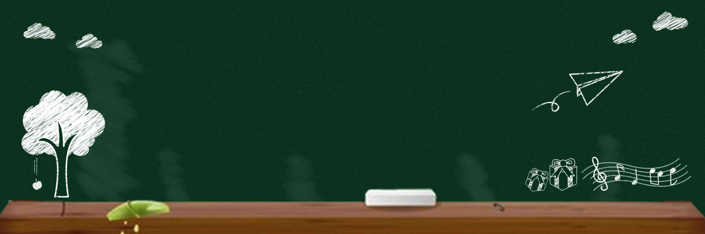

首页
第十三次学代会专栏
团委介绍
川大团委
团委成员
组织机构
分团委介绍
团情快讯
团内档案
理论学习
青年研究
团委文件
团务知识
活动专题
青年课题研究立项
迎新季
“I创意We实现”学生活动基金
活动预告
学生组织
四川大学学生会
四川大学学生社团联合会
团委文化艺术部
四川大学学生学术科技协会
四川大学青年志愿者协会
公告
这里是文章名这里是文章名这里是文章名这里是文章名
时间：2017-10-25

Arctica
时间：2017-01-01 17:20
Antarctica
1
<< 上一页
第
1
页/共10页
下一页 >>